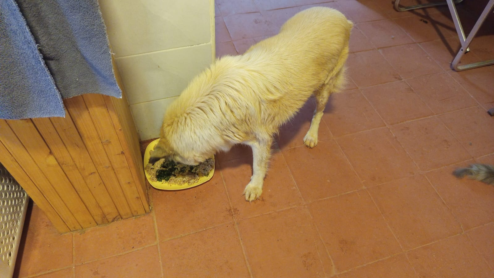

Mucheru World of Golf
Field engineering operations across Mucheru World of Golf on Thursday, 29th October 2026 achieved decisive progress in irrigation network completion, reservoir repairs, rootzone sand spreading, teebox earthwork adjustments, and gravity drainage testing:
Golf Course Operational Highlights
Plumbing teams completed the installation of automated electric solenoids and pop-up sprinklers across course lateral lines, and fully connected the irrigation pipe running through the course. Dam 1 polythene liner repair is complete, with liner welding connections and perimeter edge tucking finished. Clean river sand application was completed on Green 10 with two lorries of sand applied. River sand was hauled from Green 9 to Greens 12 and 16, while red soil was transferred from Teebox 9 to Teebox 7. Drainage crews continued digging the trench at Green 6, backfilled pipe trenches on teeboxes, shaped the main drainage canal, and tested gravity flow through PVC drainage lines.
- Irrigation Pipe Mainline & Sprinkler Installation Complete: Plumbing teams finished installing electric solenoids and pop-up sprinklers across course lines, completing the full mainline pipe run through the property.
- Dam 1 Reservoir Polythene Liner Repair Finished: Crews completed seam welding repairs on the Dam 1 liner and backfilled the perimeter anchor trench, securing the retucked liner edges.
- Green 10 River Sand Application Completed: Laborers spread and leveled two tipper lorry loads of clean river sand across Green 10, completing rootzone sand coverage over the pumice sub-base.
- River Sand & Red Soil Course Haulage Logistics: Site teams hauled river sand from Green 9 stockpiles to Greens 12 and 16, and loaded surplus red soil from Teebox 9 to Teebox 7 for surface leveling.
- Teebox Pipe & Pop-Up Sprinkler Trenches Backfilled: Ground crews used wheelbarrows and shovels to backfill and level lateral trenches over installed irrigation pipes on teeboxes.
- Green 6 Drainage Excavation & Main Canal Invert Shaping: Manual digging continued along the perimeter drainage trench at Green 6, while crews graded the deep main drainage trench for gravity flow.
- Gravity Water Flow Testing on PVC Drainage Pipes: Technicians discharged test water through installed PVC drainage pipes to confirm unobstructed gravity flow and proper pipe fall.
18-hole putting green status audit showing the latest work completed and current condition for each green as of October 29, 2026:
| Green | Current Technical & Agronomic State | Milestone Status |
|---|---|---|
| Green 1 | Pop-up sprinklers confirmed functional and operational spray coverage verified (Oct 27). | Pop-Ups Functional |
| Green 2 | Pop-up sprinklers operational with pressurized spray coverage actively watering green (Oct 28). | Pop-Ups Functional |
| Green 3 | Electric solenoid valve installed on lateral line; river sand hauled to Green 13 (Oct 26). | Solenoid Installed |
| Green 4 | Pop-up sprinklers confirmed functional and operational spray coverage verified (Oct 27). | Pop-Ups Functional |
| Green 5 | Established mature championship putting green turfgrass watered with pop-up sprinklers (Oct 24). | Turf Irrigated |
| Green 6 Today | Excavation and manual digging of the perimeter drainage trench is ongoing (Oct 29). | Drainage Trenching Ongoing |
| Green 7 | HDPE irrigation supply trench cutting through Teebox 6 to Green 7 backfilled and covered (Oct 27). | Pipe Trench Covered |
| Green 8 | Electric solenoid valve installation and lateral pipe fitting completed on green (Oct 26). | Solenoid Installed |
| Green 9 Today | River sand hauled from stockpiles to Greens 12 and 16 for rootzone layering (Oct 29). | River Sand Hauled |
| Green 10 Today | River sand application completed across green bed with 2 tipper lorries of sand applied (Oct 29). | River Sand Applied |
| Green 11 | Pop-up sprinklers confirmed functional and operational spray coverage verified (Oct 27). | Pop-Ups Functional |
| Green 12 Today | River sand hauled from Green 9 stockpiled for green rootzone construction (Oct 29). | River Sand Delivered |
| Green 13 | Pop-up sprinklers confirmed functional and operational spray coverage verified (Oct 27). | Pop-Ups Functional |
| Green 14 | Saddle clamps installed on HDPE pop-up sprinkler pipes and perimeter trenches backfilled (Oct 23). | Saddle Clamps & Covered |
| Green 15 | Saddle clamps installed on HDPE pop-up sprinkler pipes and perimeter trenches backfilled (Oct 22). | Saddle Clamps & Covered |
| Green 16 Today | River sand hauled from Green 9 stockpiled for green rootzone construction (Oct 29). | River Sand Delivered |
| Green 17 | Electric solenoid valve installed on lateral line; HDPE sprinkler trenches backfilled (Oct 24). | Solenoid Installed |
| Green 18 | River sand spread and leveled across putting green rootzone layer over sub-base (Oct 28). | River Sand Applied |
18-hole championship teebox status audit tracking launch platform shaping, red soil leveling, and irrigation pipe installations as of October 29, 2026:
| Teebox | Current Technical & Earthwork State | Platform Status |
|---|---|---|
| Tee 1 | Irrigation pipe trenches excavated across platform along marked survey lines (Oct 26). | Pipe Trenches Dug |
| Tee 2 | Red soil applied halfway across platform; lateral pipe trenches backfilled (Oct 27). | Red Soil Halfway |
| Tee 3 | Red soil applied, spread, and leveled across platform; lateral pipe trenches covered (Oct 27). | Red Soil Leveled |
| Tee 4 | Irrigation pipe trenches excavated across platform along marked survey lines (Oct 26). | Pipe Trenches Dug |
| Tee 5 | Red soil spread and leveled across platform; lateral pipe trenches backfilled (Oct 27). | Red Soil Leveled |
| Tee 6 Today | Lateral irrigation pipe and pop-up sprinkler trenches backfilled and leveled (Oct 29). | Sprinkler Trenches Covered |
| Tee 7 Today | Red soil hauled from Teebox 9; lateral pipe and sprinkler trenches backfilled (Oct 29). | Red Soil & Trenches Covered |
| Tee 8 Today | Lateral irrigation pipe and pop-up sprinkler trenches backfilled and leveled (Oct 29). | Sprinkler Trenches Covered |
| Tee 9 Today | Surplus red soil hauled to Teebox 7 for platform shaping and surface leveling (Oct 29). | Red Soil Hauled |
| Tee 10 | Irrigation pipe trenches excavated across platform along marked survey lines (Oct 26). | Pipe Trenches Dug |
| Tee 11 | Electric solenoid valve installed on lateral irrigation supply line (Oct 27). | Solenoid Installed |
| Tee 12 | Electric solenoid valve installed on lateral irrigation supply line (Oct 27). | Solenoid Installed |
| Tee 13 | Electric solenoid valve installed on lateral irrigation supply line (Oct 27). | Solenoid Installed |
| Tee 14 | Irrigation pipe trenches excavated across platform along marked survey lines (Oct 26). | Pipe Trenches Dug |
| Tee 15 | Irrigation pipe trenches excavated across platform along marked survey lines (Oct 26). | Pipe Trenches Dug |
| Tee 16 | Red soil applied, spread, and leveled; lateral irrigation pipe trenches excavated (Oct 26). | Red Soil & Trenches Dug |
| Tee 17 | Irrigation pipe trenches excavated across platform along marked survey lines (Oct 26). | Pipe Trenches Dug |
| Tee 18 | Irrigation pipe trenches excavated across platform along marked survey lines (Oct 26). | Pipe Trenches Dug |
Operations Agronomy & Engineering Synthesis
Course Agronomy & Earthwork Milestones: River sand application completed across Green 10 with 2 lorries of sand applied; river sand hauled from Green 9 to Greens 12 and 16 for rootzone beds; red soil hauled from Teebox 9 to Teebox 7; lateral trenches backfilled over pipes and sprinklers on Teeboxes 6, 7, and 8; ongoing manual trench digging at Green 6.
Hydraulic & Irrigation Infrastructure: Installation of automated solenoids and pop-up sprinklers complete; irrigation pipe mainline through course fully connected; Dam 1 polythene liner repair complete with welding connections and edge tucking finished; main drainage trench shaping and invert leveling ongoing for gravity flow; gravity water flow tested through PVC drainage lines.
Field video recording documenting Thursday, 29th October 2026 operations at Mucheru World of Golf:
Field video recording capturing daily course civil works, drainage trenching, and irrigation infrastructure progress at Mucheru World of Golf on Thursday, 29th October 2026.
Sequential photographic field documentation showing rootzone sand application, tractor material haulage, drainage excavations, gravity flow tests, teebox trench backfilling, Dam 1 liner repairs, and irrigation connections:

Green 10 — Drone Aerial View of River Sand Application
Overhead drone view showing Green 10 fully covered with clean river sand mounds over the aggregate sub-base, framed by the red soil surround with drainage lines entering from the upper fairway.

Green 10 — Manual River Sand Spreading & Profiling
Ground-level view showing laborers using shovels and wheelbarrows to spread and level delivered river sand across the stone sub-base bed on Green 10 under clear skies.

Teebox Earthworks — Loading Red Soil onto Tractor Trailer
Drone aerial capture showing the farm tractor and red trailer stationed at the teebox, with laborers shoveling surplus red soil into the trailer while women backfill lateral pipe trenches.

Teebox Platform — Earthmoving & Trench Backfilling
Longitudinal ground perspective along the teebox platform showing workers loading red soil into the tractor trailer, with crew members backfilling lateral pipe trenches along the ridge.

Course Haulage Logistics — Tractor Delivering River Sand
Ground-level view of the red tractor trailer filled with clean river sand being delivered across the course terrain for putting green rootzone staging.

Green 6 — Drone Aerial of Perimeter Drainage Trench Digging
High-angle drone view capturing Green 6 and the ongoing excavation of the perimeter drainage trench running alongside orange PVC pipes and the black dam geomembrane slope.

Green 6 Perimeter — Drainage Canal Digging & Pipe Line
Ground perspective looking down the freshly excavated drainage trench near Green 6, showing the trench invert cut into dark soil alongside the water reservoir embankment.

Main Drainage Canal — Drone Aerial of Invert Leveling
Wide drone view capturing the deep main drainage canal corridor, showing labor teams inside the trench actively grading the base for gravity flow between adjacent greens.

Main Drainage Trench — Trench Base Shaping for Gravity Flow
Deep trench view showing laborers with shovels working along the invert to shape smooth gradients for positive water discharge beneath cross-corridor irrigation lines.

Course Drainage — PVC Pipe Gravity Flow Discharge Test
Technicians testing water flow through the installed brown PVC drainage pipe line, confirming clean gravity discharge into the receiving trench invert without backwater.

Drainage Commissioning — Invert Flow & Gradient Verification
Close-up view of the PVC drainage pipe outlet discharging water into the drainage ditch adjacent to black HDPE supply lines, verifying positive pipe slope and velocity.

Drone Aerial — Teebox Trench Backfilling & Red Soil Bed
Overhead drone view showing the wide red soil teebox platform with crew members backfilling lateral irrigation trenches with wheelbarrows, with the water retention basin in the background.

Teebox 7 — Red Soil Leveling & Lateral Trench Covering
Field view of Teebox 7 showing workers spreading hauled red soil and backfilling lateral pipe trenches along the elevated platform beside the boundary fence line.

Teebox Platform — Backfilling Trenches & Pop-Up Sprinklers
Ground perspective showing site crew moving red topsoil with wheelbarrows and shovels to backfill trenches over installed pop-up sprinklers across the teebox platform.

Irrigation Pipeline — Trench Backfilling Along Course Fairway
Women laborers using shovels to backfill and cover excavated pipe trenches along the fairway corridor, protecting the black HDPE pipeline running across open turf.

Dam 1 Reservoir — Completed Polythene Liner Repair
Panoramic view of Dam 1 showing the black polythene geomembrane liner fully repaired, seam connections welded, and edge tucking completed along the entire perimeter.

Dam 1 Embankment — Liner Edge Tucking into Anchor Trench
Crew positioned along the upper embankment of Dam 1 tucking the black polythene liner edges securely into the perimeter anchor trench prior to backfilling.

Dam 1 Anchor Trench — Retucked Liner Edge Backfilled
Detailed view of the Dam 1 perimeter anchor trench backfilled with compacted earth over the retucked liner edge, securing the geomembrane against wind and soil erosion.

Irrigation Automation — Electric Solenoids & Pop-Up Sprinklers
Plumbing crew assembling automated electric solenoid control valves, blue compression fittings, and pop-up sprinkler connections in the trench along the course mainline.

Mainline Irrigation — Course Pipe Network Fully Connected
Plumber using a pipe wrench to tighten blue compression T-connectors and mainline HDPE pipes in the perimeter trench, completing the course irrigation supply network.
Chaka Farms
Farm and estate maintenance operations at Chaka Farms on Thursday, 29th October 2026 maintained balanced dairy production reconciliation, canine behavioral training, health protocols, and compound grounds upkeep:
Farm Operational Highlights
Dairy production achieved an 8.5 Litres gross harvest (5.5L morning + 3.0L evening), with 7.5 Litres dispatched for commercial sales (4.5L morning + 3.0L evening) and 1.0 Litre distributed for routine internal farm allocations (0.5L Gladys + 0.5L Maasai), achieving 100% quantitative accounting reconciliation strictly in Litres with zero discrepancy. Willy conducted morning kennel cleaning, "paw" command obedience conditioning, off-leash pack exercise walking, socialization with Mali, Zara, and Logan, deworming administered to Mali, and compound lawn grass trimming. Margaret and Monica maintained compound cleanliness and grounds upkeep.
- 100% Reconciled Dairy Harvest in Litres: Morning and evening milking yielded 8.5 Litres gross harvest, completely accounted for by 7.5 Litres dispatched for commercial sales and 1.0 Litre in routine farm allocations with zero discrepancy.
- Quantitative Commercial Dispatch Ground Truth: Commercial sales absorbed 4.5 Litres from the morning harvest and 3.0 Litres from the evening milking, leaving a zero-variance balance sheet.
- Morning Canine Sanitation & Stall Hygiene: Willy conducted thorough morning kennel stall washing and sanitation, ensuring high veterinary cleanliness and hygienic sleeping quarters.
- Paw Command Obedience & Off-Leash Pack Walking: Dogs completed individual obedience training reinforcing the "paw" command, followed by an off-leash pack exercise walk across open farm corridors.
- Pack Socialization & Veterinary Deworming: Handlers supervised socialization exercises in the morning with Mali, Zara, and Logan, with deworming medication administered to Mali.
- Disciplined Kennel Manners Behavioral Conditioning: Handlers reinforced doorway boundary control, conditioning canines to sit calmly at open stall thresholds until release cues were given.
- Compound Lawn Grass Trimming & Estate Upkeep: Willy trimmed overgrown compound lawn grass with mechanical trimmers, while Margaret and Monica maintained compound cleanliness.
Official milking production and distribution reconciliation for Thursday, 29th October 2026, accounting for all commercial sales and on-farm allocations:
| Category / Transaction | Morning Session | Evening Session | Daily Total |
|---|---|---|---|
| Gross Milk Harvested | 5.5 Litres | 3.0 Litres | 8.5 Litres |
| Commercial Milk Sales (Dispatched) | 4.5 Litres | 3.0 Litres | 7.5 Litres |
| Internal Farm Allocation — Gladys (Staff) | 0.5 Litres | — | 0.5 Litres |
| Internal Farm Allocation — Maasai | 0.5 Litres | — | 0.5 Litres |
| Internal Farm Allocation — Goat Kids (Weaned) | 0.0 Litres | 0.0 Litres | 0.0 Litres |
| Total Volume Accounted For | 5.5 Litres | 3.0 Litres | 8.5 Litres (100% Reconciled) |
Dairy Accounting & Farm Reconciliation Note
Total gross milk harvested of 8.5 Litres (5.5L morning + 3.0L evening) is 100% accounted for by 7.5 Litres dispatched for commercial sales (4.5L morning sale + 3.0L evening sale) and 1.0 Litre in routine farm allocations (0.5L Gladys + 0.5L Maasai). In accordance with reporting rules, milk volumes are recorded strictly in Litres (never kilograms), and Maasai is designated strictly as Maasai with zero discrepancy. All yields reconcile perfectly with zero variance.
Daily behavioral conditioning routines, health protocols, canine socialization, and estate compound groundskeeping conducted on Thursday, 29th October 2026:
- Morning Kennel Hygiene & Sanitization: Willy oversaw thorough morning kennel washing, deep stall scrubbing, and feeding bowl sanitation, preserving high veterinary hygiene.
- Morning Paw Command Training: Dogs participated in individual obedience drills focused on reinforcing the "paw" command with positive verbal cues and praise.
- Morning Off-Leash Pack Exercise Walking: Willy conducted an energetic off-leash walking and exercise session across open farm corridors, encouraging natural running and agility.
- Socialization Drills with Mali, Zara & Logan: Morning pack socialization sessions were conducted with Mali, Zara, and Logan, fostering calm temperament and positive pack dynamics.
- Canine Health Protocol — Deworming Administered: Routine veterinary health management included deworming medication administered to Mali during the morning care routine.
- Disciplined Kennel Manners Conditioning: Handlers reinforced disciplined kennel manners, conditioning canines to sit patiently at open stall thresholds until release cues were given.
- Compound Lawn Grass Trimming & Grounds Cleanliness: Willy trimmed overgrown compound lawn grass with mechanical trimmers, while Margaret and Monica maintained compound cleanliness.
Field video recording documenting Thursday, 29th October 2026 canine behavioral conditioning routines and kennel manners under Willy:
Structured kennel manners conditioning under Willy, verifying dogs demonstrating patience, calm stall manners, and prompt obedience to doorway release commands.
Sequential photographic field documentation showing compound grounds maintenance and lawn grass trimming at Chaka Farms:

Compound Maintenance — Lawn Grass Trimming
Groundskeeper operating a mechanical brush cutter trimming grass across the open farm compound beneath spreading acacia trees under overcast skies.

Grounds Upkeep — Kimondo Operating Mechanical Grass Trimmer
Kimondo in green protective overalls trimming lush lawn grass with a petrol brush cutter along the tree-lined compound pathway and garden perimeter.
Kabete Residence
Civil structural works, concrete mixing and casting, mechanical compaction, landscape gardening, and domestic pet care operations at Kabete Residence on Thursday, 29th October 2026 achieved significant project milestones:
Residence Operational Highlights
Structural civil works reached a major project milestone with the successful concrete pouring of the SQ shutter slab at the outdoor fireplace. Prior to casting, site laborers loaded sand and coarse ballast aggregates to the site, while steel fixers reinforced and inspected the steel bar grid. Concrete batches were mixed on site using Blue Triangle cement and laid across the shutter deck, where a mechanical poker vibrator was operated continuously to compact the wet concrete and remove air pockets. Estate gardening included weeding and cleaning flower beds at the glass room area, outdoor staircase, and lawn borders. Domestic pet care included an outdoor leashed walk and dinner for Ajabu the Golden Retriever, with resident cats Reo, Mocha, and Aiko all present together at evening dinner.
- Materials Haulage & Staging for SQ Slab: Laborers loaded and staged sand and coarse ballast stone to the SQ site in wheelbarrows, positioning all aggregates ready for concrete batching.
- Reinforcement of Steel Bars for Shutter Slab: Steel fixers inspected and tied rebar reinforcement bars across the shutter slab deck and drop beam troughs to ensure structural load capacity.
- On-Site Shutter Slab Concrete Mixing: Construction crews mixed concrete batches on site combining Blue Triangle cement, river sand, and ballast gravel with measured water.
- Laying Down & Screeding of Shutter Concrete Slab: Freshly mixed concrete was placed and spread over the steel reinforcement grid, screeded to uniform thickness across the fireplace deck.
- Mechanical Poker Vibration & Air Pocket Elimination: Operators compacted the wet concrete using a mechanical poker vibrator, consolidating the mass to eliminate voids and air pockets.
- Estate Landscaping & Flower Bed Maintenance: The gardener weeded, edged, and cleaned terraced flower beds along the glass room area, stone staircase, and driveway borders.
- Domestic Pet Care — Exercise & Cat Gathering: Handlers took Ajabu the Golden Retriever on a leashed garden exercise walk followed by dinner; resident cats Reo, Mocha, and Aiko were all present at evening dinner.
Sequential photographic field documentation showing SQ fireplace shutter slab materials loading, rebar reinforcement, concrete mixing, pouring, mechanical vibration, garden flower bed maintenance, and domestic pet care:

SQ Fireplace — Loading Sand & Ballast Aggregates
Workers in protective overalls loading river sand and coarse ballast stone into wheelbarrows at the SQ outdoor fireplace site for concrete batching.

SQ Shutter Slab — Steel Bar Rebar Reinforcement
Steel fixer in safety vest crouching on the formwork tying longitudinal rebar and distribution mesh over electrical conduits ahead of the concrete pour.

Civil Structural Works — Mixing Concrete on Site
Construction crew opening Blue Triangle cement bags and mixing measured batches of river sand and ballast gravel with water beside the SQ slab rebar deck.

SQ Fireplace — Laying Down Shutter Concrete Slab
Laborers using shovels and an aluminum screed bar to spread and level freshly mixed ballast concrete across the rebar mesh of the SQ shutter slab.

Concrete Compaction — Poker Vibrator Air Pocket Removal
Construction crew operating a mechanical poker vibrator in the wet concrete mix, compacting the slab to eliminate internal voids and ensure structural density.

SQ Shutter Slab — Freshly Placed & Compacted Concrete
Close-up view of freshly placed, vibrated concrete covering the rebar mesh and drop beam trough, achieving smooth consolidation across the deck.

Estate Landscaping — Flower Bed Weeding at Glass Room
Estate gardener in green uniform tending and weeding the raised ornamental flower bed containing cypress shrubs and tropical foliage beside the glass room.

Grounds Upkeep — Flower Bed Cleaning at Staircase
Gardener clearing fallen leaves, weeds, and debris along the terraced stone retaining wall flower beds beside the outdoor residence staircase.

Garden Maintenance — Terraced Retaining Wall Bed Care
Detailed view of the gardener tending plants along the tiered natural stone flower beds beneath mature trees, maintaining soil moisture and weed-free beds.

Lawn & Border Care — Weeding Flower Bed Edge
Gardener bending over to hand-weed grass borders and groundcover beneath vibrant red foliage and ivy-covered boundary walls.

Domestic Pet Care — Ajabu Leashed Garden Exercise Walk
Ajabu the Golden Retriever on a patterned leash enjoying an outdoor exercise walk along the estate garden pathway bordered by tropical flowering shrubs.

Pet Wellbeing — Ajabu Outdoor Walk in Residence Gardens
Ajabu standing happily on the paved garden walkway on a patterned leash beside lush green shrubs during his daily outdoor exercise routine.

Domestic Pet Care — Ajabu Indoor Evening Mealtime
Ajabu eating his prepared meal indoors from his plate on the terracotta-tiled floor, maintaining consistent daily canine nutrition and domestic care.

Domestic Pet Care — Reo, Mocha & Aiko All Present at Dinner
All three resident cats — Reo, Mocha, and Aiko — dining together peacefully indoors from their individual stainless steel bowls on the tiled floor.